JavaScript
Basics
Loops
Functions
Methods and Objects
APIs
JavaScript Helpers
Handy Dandy Tools
JavaScript is what allows a user to interact with the site
Basics
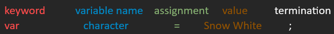- variables store value and can be declared 4 ways: automatically or with the keywords var, let, or const. Types of variables:
- undefined: variable with no value
- string: series of characters in single or double quotes
- number: whole or decimal, no quotes
- booleans: test true or false
- * type is tied to the value, not the variable
- arrays store multiple items under a single variable name, go inside [brackets]
- logical comparison test equality or difference between variable/values.
- == equal to
- === equal value and type
- != not equal
- !== not equal value or type
- > greater than
- < less than
- >= greater or equal to
- <= less or equal to
- logical operators test if a statement is true or false and logical between variables and values
- && and
- || or
- ! not
- Conditional statements perform different actions based on different conditions.
- if specifies code to be executed if condition is true, keep checking no matter what
- else if specifies new condition to test if 1st is false
- else specifies code to be executed if condition is false, stops it from checking for more conditions
- Switch Statements are like conditional/if-else statements, but is usually shorter and more readable.
Loops
For loops loop through a block of code a number of times
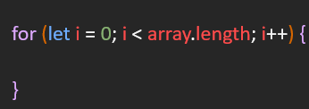3 statements in a for loop:
- starting point: i = 0 starts loop at beginning of array
- condition: i < array.length length of array, which determines how long loop will run
- final: what allows the array to iterate over each item. i++ makes sure every time the code loops, it increases by one
While loops through a block of code while a specified condition is true
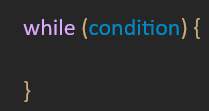For in loops loop through the properties of an object
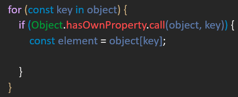For of loops loop through the values of an iterable object
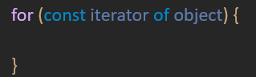Functions
Functions are usable blocks of code that perform specific tasks. They should only ever have one job.
Function declarations vs function expressions
- functions load before any code is executed, global
- function expressions load only when that line is reached, local
Functions are written as the following:
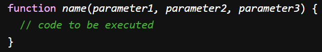Arrow Functions
Arrow functions work the same as regualr functions, they just allow developers to write shorter function syntax.
Regular function syntax:
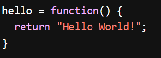Arrow function syntax:

- if arrow function only has 1 expression and returns a value, omit {} and return keyword
- paramaters go inside the (); if there is only 1 paramater, omit the ()
- this keyword does not work with arrow functions when the function is within an object
Methods and Objects
Methods are actions that can be performed on objects; they are properties containing a function definition. Objects are collections of properties.
Methods
- a method is a property containing a function definition, attached to variables/objects
- this is a keyword that refers to an object. Which object depends on how it's being used/called.
- this alone and in a function refers to the global object
- this in a function in strict mode is undefined
- this in an event refers to the element that recieved the event
- methods like call(), apply(), and bind() can refer this to any object
- You can access a object with the following syntax: 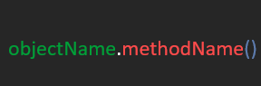
Objects
- a collection of properties with { right after the assignment
- properties are made up of key-value pairs
- to access property's value, use the object's name associated key
console.log(planet.name);
APIs
Application Programming Interfaces — APIs — are constructs made available in programming languages to allow developers to create complex functionality more easily. It's a set of methods, properties, events, and URLs that allow interaction with a web browser. They allow access to things like computer mics and cameras or, for touch screens, tell the device where its been touched.
- client-side/web API: sends requests; code is running in the browser
- server-side/thrid party API: responds to requests; code is running on a sever
Document Object Model
The Document Object Model — DOM — is an API for HTML documents that allows you to manipulate the browser without permanently changing anything in the code.
Server Routes
A route is the endpoint of a server request, where the data is kept. Routes let you send and revieve data depending on the route and the HTTP method used. Routes are used for different types of requests/HTTP methods.
- post submits data to the specified sources.
- get retrieves a resource from a server
- delete deletes specified resource
- put / patch updates specifed resource (these are not often used)
RESTful APIs
Representaional State Transfer, REST, is like a set of rules that provide a standard of way for clients to interact with resources on the internet.
RESTful API is like a waiter in a resturant following a menu (API documentation) and serves the food (resources) requested using the predefined instructions (HTTP methods). RESTful APIs must:
- comprise servers, clients, resources and requests via HTTP
- use stateless communications between client and server
- * to be stateless, one request to a server doesn't depend on/affect a different request
- serve cached objects to reduce bandwidth
- maintain uniform interface between client and server so they can evolve seperately
- can perform code on demand (optional)
JavaScript Helpers
jQuery
jQuery is a third party JavaScript library. It's purpose is to make JavaScript easier to use.
jQuery syntax is tailor-made for selecting HTML elements and performing some action: $(selector).action( )
- $ defines jQuery
- ( ) find HTML elements
- .__( ) action to be performed on the element(s)
Below are some examples:
$(this).hide() hides the current element.
$("p").hide() hides all <p> elements.
$(".test").hide() hides all elements with class="test".
$("#test").hide() hides the element with id="test".
All jQuery must be inside the document ready event:
Node.js
Node.js is a cross-platform, open-space server that runs JavaScript on the backend and lets you make your own server-side applications with JavaScript. This is done mainly with NPM packages.
- Node Package Manager — NPM — packages let you easily use JavaScript modules, blocks of code that can do something
- touch index.js creates index.js file
- node takes you to the node interpreter, process.exit () takes you out
- npm install downloads the npm and creates the package.json file; this has to be done for every new project
- npm i inquirer@8.24 installs the inquirer package and the node_modules folder and package-lock.json file
- you have to add const inquirer = require("inquirer") in the js file to then use the inquirer package
- the fs module works with the file system on your computer. Some fs methods are:
- fs.readFile() reads files
- fs.writeFile() creates a file if one doesn't exist, or replaces one that does in the specified location
- fs.writeFile() adds data to your file
- const fs = require('fs'); needs to be in the js file to us the fs module
Object Oriented Programming
Object Oriented Programming (OOP) is a model that organizes software design around data and objects rather than function and logic.
The four pillars of OOP are abstraction, encapsulation, inheritance, and polymorphism.
- abstraction
- encapsulation
- inheritance
- polymorphism
Express.js
Express.js is a framework for Node.js that let's you write your own APIs, handle HTTP requests, and implement *middleware in server-side applications. Express exists on the back-end of applications and is the most widely used framework, but there are others.
- * middleware are functions that can intercept and process a request before it reaches the final route
- npm i express downloads express to the project. It then has to be imported with require
- node server starts/runs the server
- ctrl c stops the server
Routes send and recieve data depending on the specific route and the HTTP method used. The HTTP methods are:
- post submits data to the specified sources.
- get retrieves a resource from a server
- delete deletes specified resource
- put / patch updates specifed resource (these are not often used)
Port numbers direct data to the correct program. If a computer is a house with many rooms, each one being a program, then port numbers are the doors to the rooms. They usually start at 3000 and go up from there.
RESTful APIs
Representaional State Transfer, REST, is like a set of rules that provide a standard of way for clients to interact with resources on the internet.
RESTful API is like a waiter in a resturant following a menu (API documentation) and serves the food (resources) requested using the predefined instructions (HTTP methods). RESTful APIs must:
- comprise servers, clients, resources and requests via HTTP
- use stateless communications between client and server
- * to be stateless, one request to a server doesn't depend on/affect a different request
- serve cached objects to reduce bandwidth
- maintain uniform interface between client and server so they can evolve seperately
- can perform code on demand (optional)
Modular Routing
Modular Routing is having each route in a separate file and bouncing between them based on the client's request.
- app.use mounts the middleware for all routes of the app.
- router.use mounts middleware for routes of a specific router, used for extracting routes.
Query Params
Query Params change the information you get back from the API, whether it's the order of the data or the content. Based on what you put in, it sorts through the information.
SQL and MySQL
Structured Query Language, SQL, uses queries to interact with data that is stored in a database. MySQL is an open-source database product that implements the SQL standard. Some operations are:
- CREATE makes a new table
- CREATE TABLE table_name (column_name column_type constraints);
- column_name name of the particular column
- column_type datatype of the coulmn, depends on the data of the reference column. Can be char(), varchar(), int(), float(), etc.
- constraints give a set of restrictions, can be not null, primary key, foreign key, etc.
- use <database> command must be used before any operation on the table. Like cd, it lets you move around your databases
- READ is used to retrieve data from the table of a database
- UPDATE alters the content or stucture of a table
- DELETE FROM [table name] WHERE [variable] =[value] removes content or structure from the table
Databases and running SQL
When making databases in SQL, the schema.sql file sets up the tables in the database and the seeds.sql file holds the data for those tables.
- mysql -u root -p starts MySQL on your terminal
- source [file name] runs the .sql file
Other commands:
- SELECT extracts data from a database
- INSERT INTO inserts new data into a database
- CREATE creates a new database or table
- ALTER modifies a database or table
- DROP deletes a database or table
- CREATE INDEX creates an index (search key)
- DROP INDEX deletes an index
- WHERE filters through records
- SET used with UPDATE to specifiy columns and values are updated
- DESCRIBE [table_name] shows the columns and types of data in a table
Keys
Keys identify rows of data in a table and can link tables together by matching keys
- PRIMARY KEY uniquely identifies record of your choice in a table 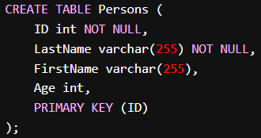
- FOREIGN KEY is a feild in one table that refers to a PRIMARY KEY in another table. Names and values have to match across tables 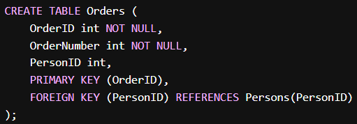
Data Types
Data types define what value the column in a tablecan hold. 3 main types: string, numeric, date and time.
- string
- VARCHAR(size) string up to 65,535 characters
- TEXT(size) string up to 65,535 bytes
- numeric
- INT(size) numbers up to millions
- date and time
- DATE date YYYY-MM-DD format
Joins
JOIN combines rows from 2 or more tables based on a related column
- INNER JOIN returns records that have matching values in both tables 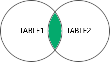
- LEFT JOIN returns all records from the left table and matched records form the right 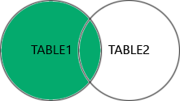
- RIGHT JOIN returns all records from the right table and matched records from the left 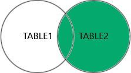
- FULL JOIN returns all rows if there is a match in right or left table, returns NULL for columns with no match 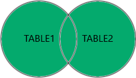
- Other other types of JOINS:
- CROSS JOIN returns all records from both tables
- SELF JOIN joins a table with itself
Connecting a database to a server
Getting started:
- should have schema.sql and seeds.sql files in db folder
- need to have a server.js file to write the connection
The steps:
- mysql -u root -p to log into MySQL
- source ./db/schema.sql to run schema file
- source ./db/seeds.sql to run seeds
- SELECT * FROM [table_name]; to read the data in the table
- exit to exit MySQL
- npm install to install Node
- npm i express to install Express
In js file(s):
- const db = mysql.createConnection or similar to connect to SQL database
- db.query([commands])
Sequlize
Sequelize simplifies database interactions in Node.js applications, helps organize and retrieve information from the database.
- npm i sequelize to install sequelize
- npm i --save mysql2 to install MySQL driver
dotenv is a Node moduale that lets you load enviroment variables without hard coding it into the code. Also used for variables you need but want to keep hidden, like APIkeys or passwords.
- npm i dotenv --save installs the package
- require('dotenv').config imports the env file.
- in the .env file: 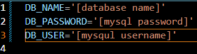
Resources
W3 Schools SQL tutorialMongoDB
MongoDB is a NoSQL document database that uses documents to store data using BSON. MongoDB Atlas is a cloud database platform and the counterpart of locally run MongoDB.
- NoSQL is an umbella term for any database that is not SQL. The four main types are:
- document databases
- key-value stores/hash databases
- graph databases
- column-oriented
- BSON, Binary JSON, is the data format the MongoDB uses, works like regular JSON
- MongoDB uses documents and objects in collections instead of tables and don't have an enforced schema to limit the type of data stored
| SQL | MongoDB |
|---|---|
| table | collection |
| row | document |
| column | field |
| related data split between tables | related data nested in embedded documents |
Commands
- use [database name] move between databases
- .insertOne inserts a document
- .updateOne updates a document
- .updateMany updates multiple documents at once
- .find selects document in a collection
- .deleteOne deletes a document, should be used by id
- .dropDatabase() drops current database
- .getCollectionNames() shows all collections
- .db.[collection name] drops specified collection
Cursor Methods
In MongoDB, executing a query doesn't immediately sult in a set of documents; it's a cursor first. A cursor is a pointer/initirator to the result set of the query -- it doesn't hold the data but the information to get to the data. Cursor methods let you navigate through the result set to do different things.
If a database is a bookshelf and the documents the books, a cursor is a bookmark that points to the first book matching the query/search criteria.
Different types of cursor methods:
- forEach() applies a function for each document in a cursor
- next() returns the next document in the cursor
- toArray() used to convert the result set of a query into an array of documents
- limit() limits the number of documents returned by the cursor
- skip() skips a specified number of documents from the beginning of the cursor
- sort() sorts the documents in the cursor based on the specified criteria.
- count() returns the count of documents in the cursor
- map() applies a function to each document in the cursor and returns the results as an array
- pretty() formats the output of the cursor in a more human-readable way
Mongoose
Mongoose is an Object Data Modeling (ODM) library for MongoDB and Node. Mongoose allows you to define schemas for your data models and provides a set of features to interact with MongoDB
- A schema is declared in MongodDb using Mongoose with something like const Schema = mongoose.Schema; or const { Schema, model } = require('mongoose'); (perferred way). The schema is then defined (models file)
- The Mongoose connect() establishes a connection to the MongoDB database (connection file); looks something like const [variable name] = 'mongodb://127.0.0.1:27017/[database name]';
Getting started
- npm i express mongoose to install express and mongoose for the project
- use newDatabase (in the terminal or in MongoDBCompass) creates a new database called newDatabase; databse doesn't show up until there's content
- db.createCollection("intro") OR db.intro.insertOne({"title": "Hi!"}) creates a collection; the second one inserts a document called Hi! into the collection
- db.intro.insertOne({"title": "Hi!"}) inserts a single document, Hi!, into the intro collection
- create a connection file using connect() method
- create a server file to set up the Express server and connect it to the MongoDB database
React
React is a javaScript library for building user interfaces (UI) using components.
- components are like the building blocks for React; they're reusable, and look like organized units on the page
- props send variables from one component to the other
- React uses a virtual DOM instead of directly manipulating the browser's DOM; when a component's state changes, React compares the virtual DOM with the real DOM and only updates the parts that have changed
- JSX is a syntax extension to JavaScript, can put any JS expression in braces
Getting started
- npm create vite@latest creates a new React project
- connect to GitHub
- git init initialize a Git repository
- git add . add all files in the project
- git commit -m "Initial commit" to add commit message
- git remote add origin <repository_url>
- git checkout -b main to create main branch to connect to GitHub's main branch
- git pull origin main --allow-unrelated-histories lets you merge the unrelated histories of the branches
- git push origin main to push changes to main branch
Webpack
Webpack is a library that simplifies the process of managing dependencies and bundling assets. It bundles together various assets such as JavaScript files, CSS stylesheets, images, and fonts into a single package for deployment.
- loaders are modules that let Webpack transform individual files during the bundling process
- loaders are usually used for transpiling code, preprocessing CSS, or handling different file formats
- loaders are applied directly to the source files and imported or required in the code
- different loaders
- plugins operate on the entire bundle rather that individual files
- allow for a wide range of tasks like code optimization, asset management, and environment-specific configuration
- can generate HTML files, extract CSS into separate files, minifying JavaScript code, and more
- different plugins
Hot Module Replacement
Hot Module Replacement (HMR) is a feature in Webpack that allows developers to update modules in an application without requiring a full page reload. The hot module is the file you're working on, gets replaced by the build.
- Instead of reloading the entire page, HMR applies incremental updates to the parts of the application that have changed
- HMR is an opt-in feature; if it's enabled in webpack.config,
- need to add webpack-dev-server package and configure it to enable HMR 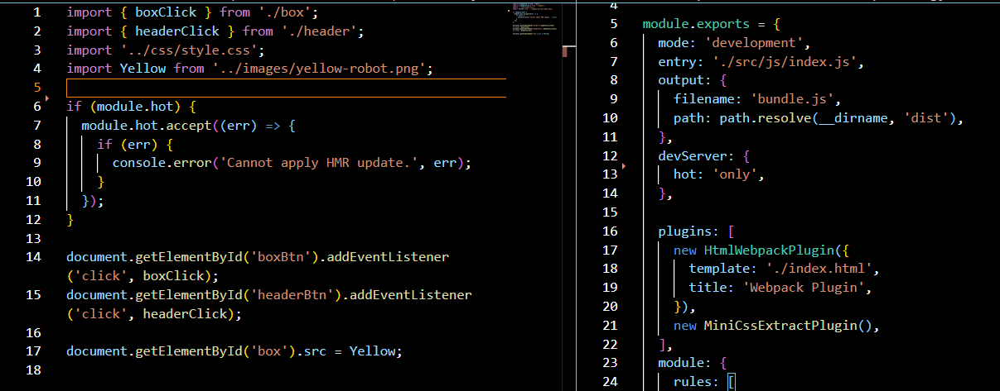
Handy Dandy Tools
Local Storage
Local storage is a window object property that stores strings that represent objects in the browser. To sore arrays or objects, you have to convert them to strings. It can be used to save scores, simple tasks, etc.
- localStorage.setItem saves the information as a string
- localStorage.getItem retrieves the information from local storage to be used/displayed
- localStorage.setItem saves data to local storage
Local storage works in key-value pairs:
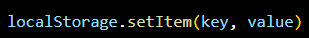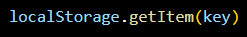
JSON.stringify() is used to convert data into a string. JSON.parse is used to convert strings into objects.
parseFloat parses a value as a string and returns the first number or NaN if no number